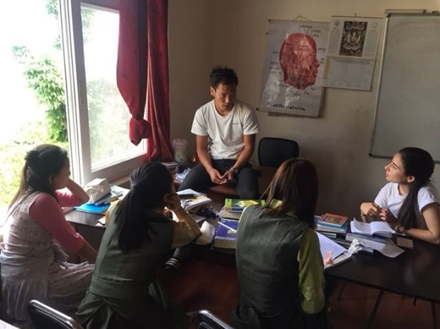
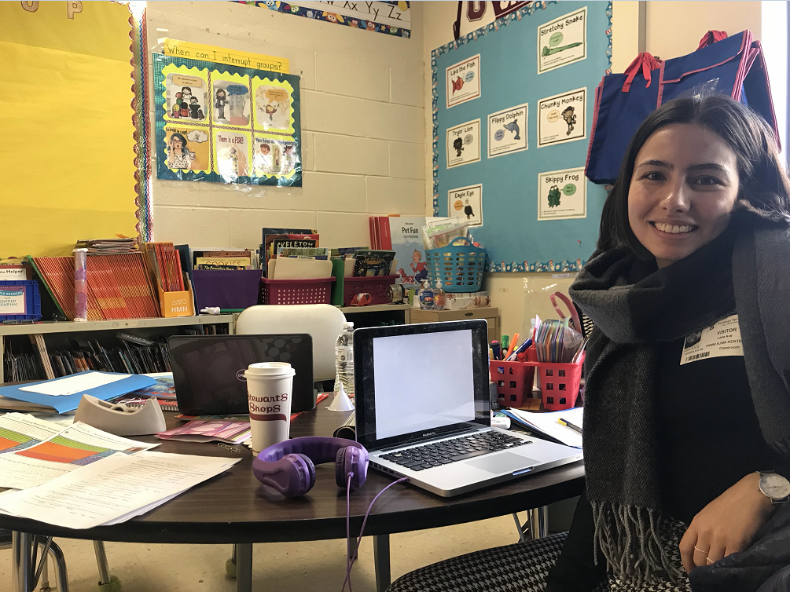
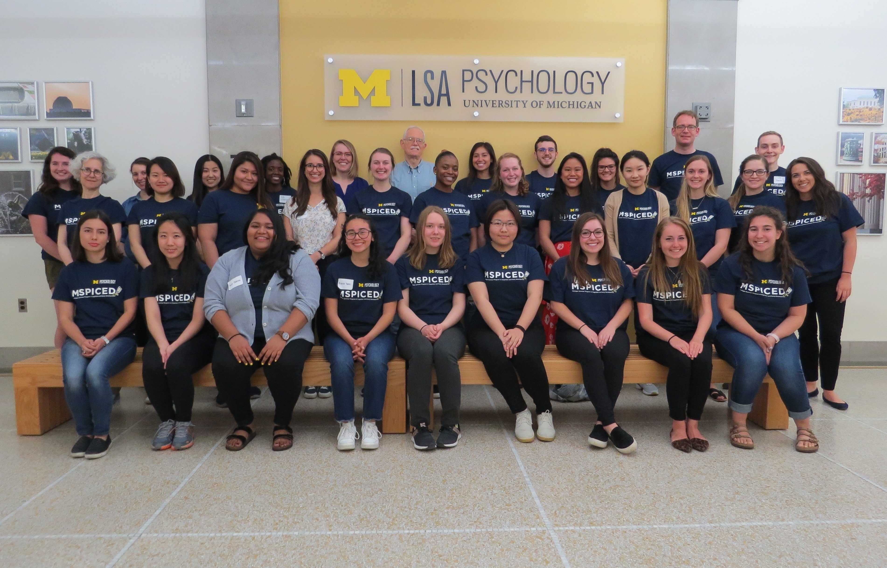
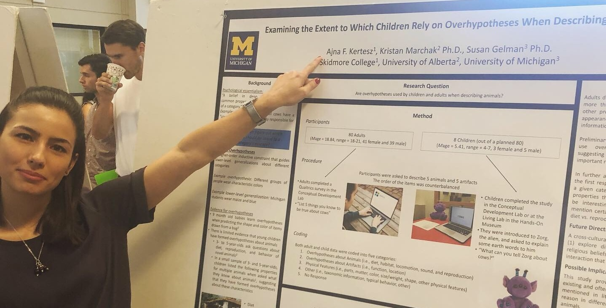

About
I’m currently a third year Ph.D student in Developmental Psychology at the University of Texas. My graduate advisor is Dr. Catherine H. Echols and I work in her Langauge Development Lab.
I recieved my M.A. in Psychology from the University of Texas at Austin. My Master’s thesis explored the role of Cultural Tightness and COVID-19 Threat perception in predicting compliance with COVID-19 health norms across 11 countries.
I received my B.A. in Anthropology and Psychology from Skidmore College, where my thesis work explored children’s selective trust in accented speakers and the malleability of accent-based discrimination.



During my undergraduate years I’ve worked with Dr. Susan Gelman and Dr. Kristan Marchack to study children’s conceptual development, tendency to use overhypotheses, and ability to learn from linguistic cues of generality.


I am a UWC Davis Scholar and I have completed my International Baccalaureate at the United World College of South East Asia, Singapore.
I was born and raised in Budapest, Hungary, but I was lucky enough to have lived in Singapore, Nepal, India and the U.S. during my academic career. The possibility to live with individuals of different cultural backgrounds has greatly influenced my research and I thrive to understand how our differences can be celebrated and how our similarities may help promote cooperation, collaboration, teaching, and learning in the current globalized environment.